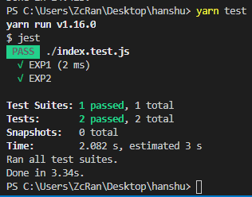

描述运算优先级
看 reduce 的时候，发现这个运算从左到右可以处理数组的优先级 先拿四则运算试一下 这个测试的值分为：值和运算符，值是字符串或数组 resolve 函数处理值 OP 处理运算符
const OP = {
'+': value => {
return next => Number(value) + Number(resolve(next))
},
'-': value => {
return next => Number(value) - Number(resolve(next))
},
'*': value => {
return next => Number(value) * Number(resolve(next))
},
'/': value => {
return next => Number(value) / Number(resolve(next))
}
}
// 是否为数组
const isArray = value => value instanceof Array
// 是否为运算符
const isOP = value => OP.hasOwnProperty(value)
// 处理数值
const resolve = value => {
return isArray(value) ? value.reduce(reducer) : value
}
const reducer = (prev, next) => {
return isOP(next)
? OP[next](resolve(prev))
: prev(resolve(next))
}
module.exports = reducer
测试一下
var reducer = require('./index')
// ((2*(2+1))+10)/(1+1)=8
const EXP1 = [[["2", '*', ["2", "+", "1"]], "+", "10"], "/", ["1", "+", "1"]]
// ((5+2)/(1+2+3))+(2*5)=11.17
const EXP2 = [[["5", '+', "2"], "/", ["1", "+", "2", "+", "3"]], "+", ["2", "*", "5"]]
test('EXP1', () => {
expect(EXP1.reduce(reducer)).toBe(((2 * (2 + 1)) + 10) / (1 + 1))
})
test('EXP2', () => {
expect(EXP2.reduce(reducer)).toBe(((5 + 2) / (1 + 2 + 3)) + (2 * 5))
})
拿 exp1 为例子，我的想法是：值与运算符计算，比如 2，数值 2 和运算符，合成一个'二乘以'的计算函数，用于处理紧接着的值；计算函数与值计算时，返回计算后的值 成功了

这样就能拿一个数组描述运算优先级了